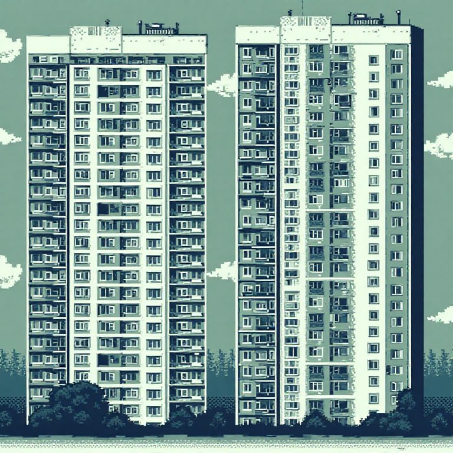
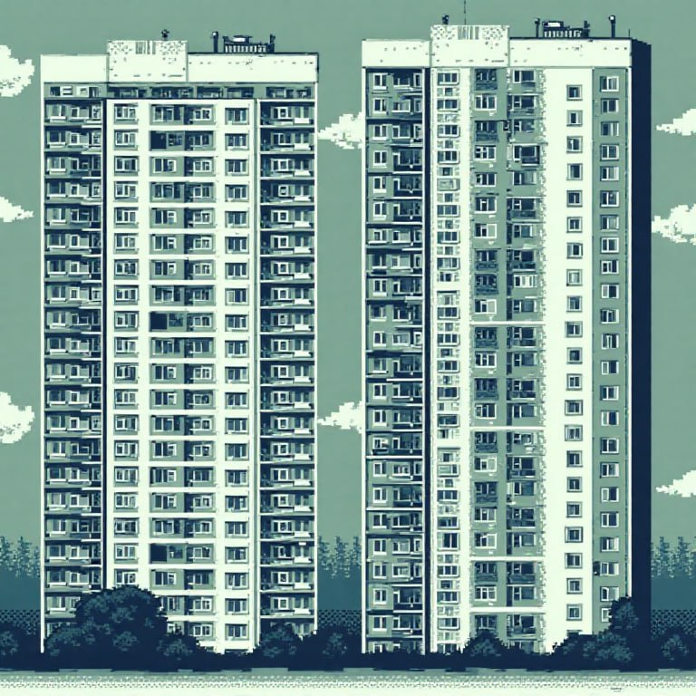

Как подключить ComfyUI к рабочему процессу и получить +15 свободных часов в неделю — с готовым сценарием и без технического бэкграунда.
.jpg) 

.jpg)
Почему это отличается от всего, что вы видели до этого момента
Обычно дизайнеру советуют: «Хочешь работать быстрее — прокачай тайм‑менеджмент, установи трекер задач, автоматизируй процессы». Звучит разумно, но на деле почти не помогает. Потому что дело не во времени, а в том, что сами задачи перегружены рутиной.
Я предложил другой путь — подключить ComfyUI так, чтобы она реально помогала. Например, мы автоматизировали вырезание объектов с фона, генерацию разных вариантов дизайна и быстрые ресайзы. Всё работает просто: один раз настраивается — и потом экономит по несколько часов в день.
Почему это нужно внедрять сейчас
Мы протестировали метод на команде: 4 дизайнера, 3 визуальных ассистента и 2 специалиста из агентств. Уже на 5‑й день работы они стали закрывать задачи на 2–3 часа раньше.
Например, раньше дизайнер делал баннер с адаптациями под соцсети около трёх часов. С моим сценарием в ComfyUI — всего 40 минут. Программа сама вырезает фон, создаёт стилизованные версии, меняет размер под нужный формат. И всё это — без потери качества.
Что именно входит в этот метод
Метод — это не просто «включи нейросеть и жди результата». Всё построено по понятной схеме:
- Дизайнер открывает готовый workflow в ComfyUI.
- Загружает свой бриф или референсы.
- Выбирает нужную модель: например, SDXL для генерации фонов или Kontext для точечного редактирования.
- Нажимает старт — и получает не сырую картинку, а рабочий результат, который сразу можно адаптировать под задачу.
Например, Kontext даёт возможность менять отдельные детали (освещение, цвет глаз, эмоции, одежду) на фото без искажений окружающих пикселей. Это особенно полезно в нейрофотосессиях — можно сгенерировать портреты для презентации, сайта или соцсетей без фотографа и студии, но с живым, естественным результатом.
Почему этому можно верить
Никто из ребят не был технарём. Все — обычные дизайнеры, которые раньше даже не открывали ComfyUI. Но результат они получили уже в первую неделю.
Им не пришлось учиться неделями — я просто дал им готовую пошаговую инструкцию, где всё разложено по полочкам. Они загружали файл, нажимали нужные кнопки — и всё работало. Без сложных настроек и путаницы.
Если вы думаете:
- «Я не разбираюсь в таких программах»
- «Я пробовал раньше, ничего не понял»
- «Мне лень во всё это вникать»
Понимаю. Но как раз в этом методе никто не просит вас вникать глубоко. Я специально упростил всё, насколько возможно: настроил интерфейс, сделал его понятным, заранее подключил нужные инструменты. Вам нужно просто следовать шагам, как в инструкции по сборке конструктора.
Кто уже получил результат
После эксперимента ребята начали считать время. Один дизайнер, который раньше заканчивал в 8 вечера, теперь освобождается к 5. У другого освободилось утро.
Одна визуалка из агентства сказала, что впервые за месяц смогла просто выйти на прогулку — и не думать о правках. Все стали меньше уставать. Потому что рутинные задачи теперь делаются автоматически — руками почти ничего не приходится доделывать.
Почему меня стоит слушать
Меня зовут Джон Крылов. Сейчас я старший режиссёр монтажа в МИА «Россия сегодня», работаю на проектах РИА «Новости» и «Спутник». До этого я был на Первом канале — и там же, ещё несколько лет назад, я впервые начал использовать нейросети в своей работе.
Один из первых серьёзных кейсов был связан с восстановлением старых портретных фотографий: изображения 512×512 были плохого качества, и я начал использовать апскейлеры на базе Stable Diffusion, как раз через ComfyUI. Это дало отличный результат, и я быстро подключил к этому весь отдел. Мы начали регулярно улучшать исходники с помощью нейросетей прямо в производственном цикле.
Позже, уже в «Россия сегодня», мы масштабировали этот подход на весь холдинг. Все редакции начали использовать нейросети: сначала — для создания аватаров через сторонние сервисы, а затем — именно ComfyUI для более сложных задач. С его помощью мы делали:
- Раскадровки для видеосъёмок и анимации: художник создаёт скетч — нейросеть превращает его в полноценный кадр.
- Нейрофотосессии с обучением LoRA‑моделей: мы обучали модели на фото политиков и других публичных персон, чтобы быстро генерировать изображения в нужном стиле и на нужном фоне (например, с государственным флагом).
- Кастомные визуальные материалы под новостные задачи, без необходимости в фотобанках или съёмках.
Я изучаю эту технологию уже больше четырёх лет. Начинал ещё с автоматических скриптов на ранних версиях Stable Diffusion, потом перешёл на ComfyUI — и был рад, что появился инструмент с гибкой логикой на нодах, где всё можно собрать под себя.
Почему меня стоит слушать? Потому что я не теоретик. Всё, о чём я рассказываю — это опыт, проверенный в реальной работе с большими редакциями, с жёсткими дедлайнами и высокими требованиями к качеству. И я не просто научился использовать ComfyUI сам — я внедрил его в реальную индустрию, адаптировал под процессы и обучил других. Я знаю, какие проблемы возникают вначале — и как их решать, чтобы сэкономить ваше время и нервы.